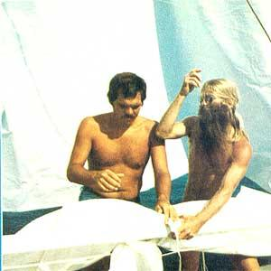

It's essential that you have enough experience to feel competent at the helm, to know the sailing vessel's nomenclature, to tie knots quickly and perfectly, and to be fully aware of the rules of safety a float.